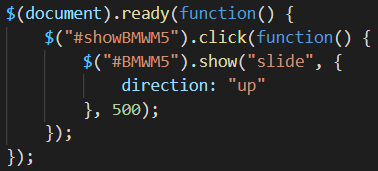
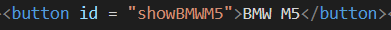
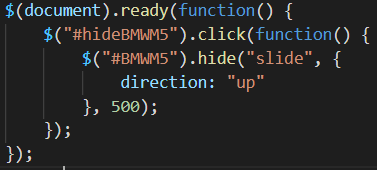
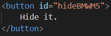
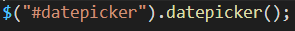
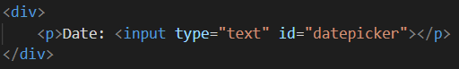
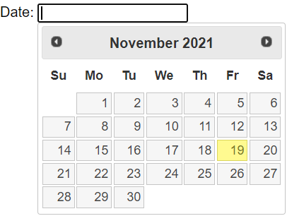

-
Метод jQuery .show() дозволяє відображати скриті вибрані елементи.
Скрипт виклику методу show():

Button, що реагує на цей скрипт:

-
Метод jQuery .hide() дозволяє скривати вибрані елементи.
Скрипт виклику методу hide():

Button, що реагує на цей скрипт:

-
Інструмент вибору дати прив’язаний до стандартного поля введення форми. Зосередьтеся на введених даних (клацніть або використовуйте клавішу табуляції), щоб відкрити інтерактивний календар у невеликому накладенні. Виберіть дату, клацніть в іншому місці сторінки (розмийте введені дані) або натисніть клавішу Esc, щоб закрити. Якщо вибрано дату, зворотний зв’язок відображається як значення введення.
Скрипт виклику методу dateclicker():

Поле, що реагує на цей скрипт:

Зовнішній виглід dataclicker:

-